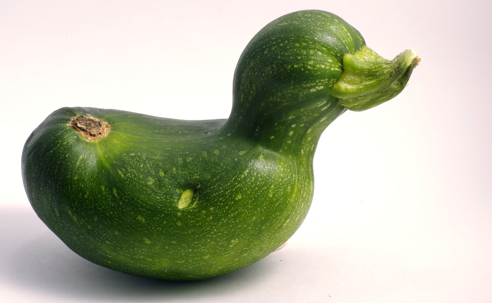
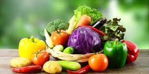
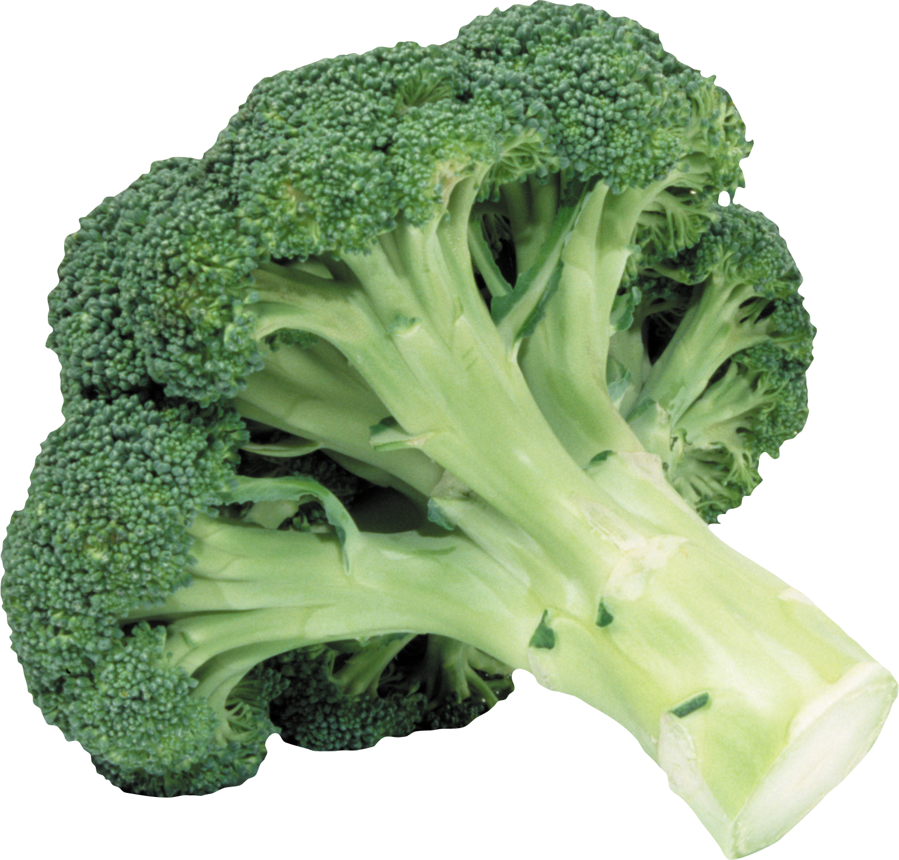
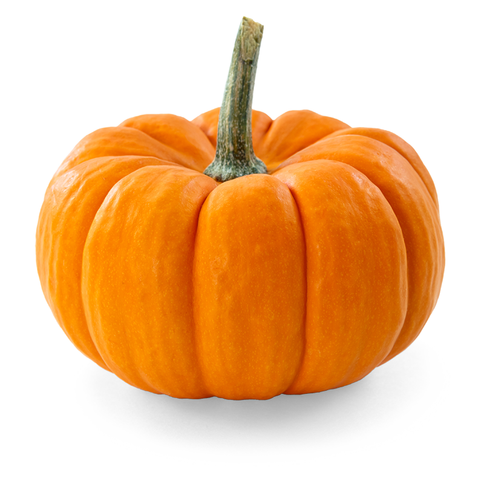
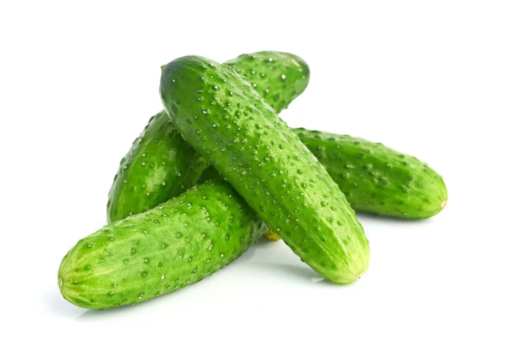
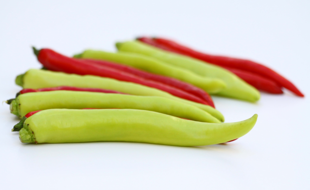
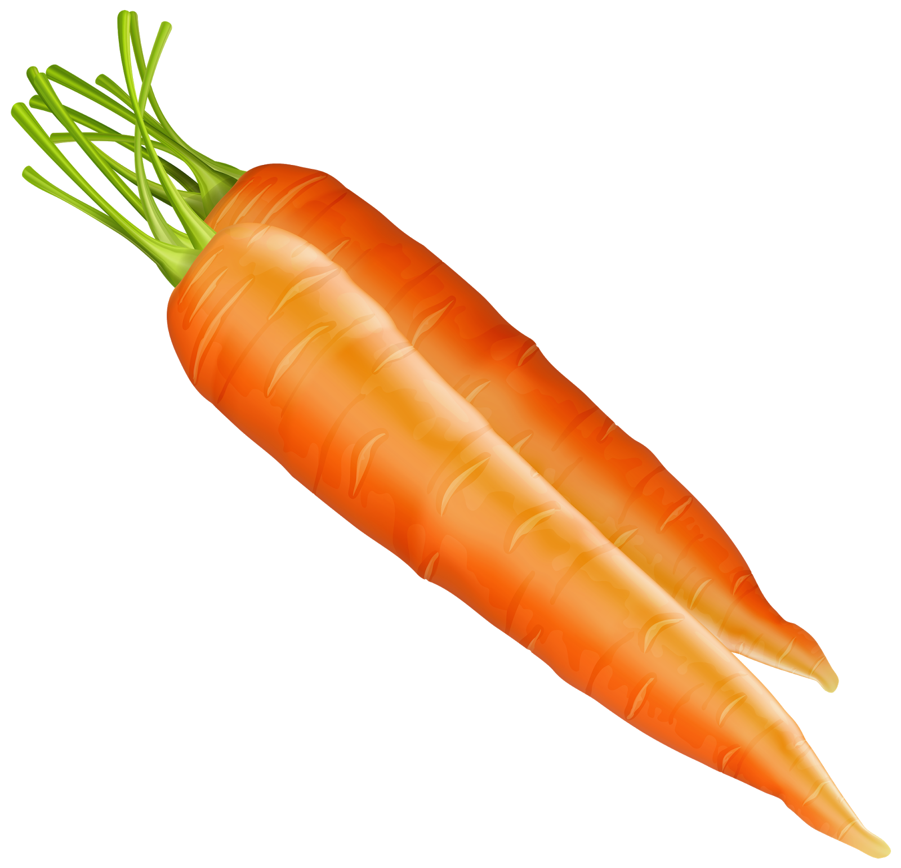
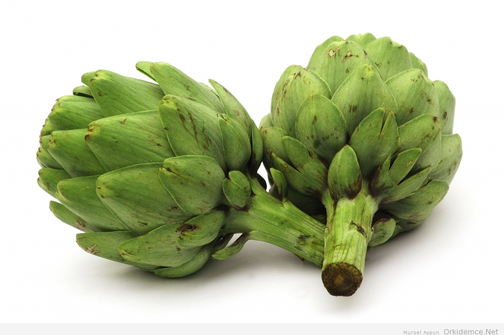
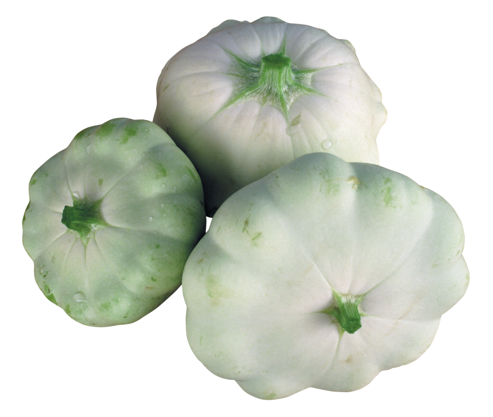
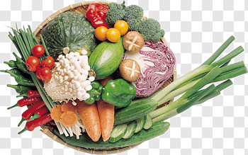

Баклажа́н, или Паслён тёмнопло́дный — вид многолетних травянистых растений рода Паслён (Solanum). Возделывается как однолетнее растение. Съедобен только плод.
 Цуккини – это разновидность кабачка, один из семейства тыквенных, родственник патиссонов, тыквы и огурцов.
Пе́рец — название ряда различных растений, а также распространённых пряностей, получаемых из их плодов.
Свёкла обыкнове́нная — однолетнее, двулетнее или многолетнее травянистое растение; вид рода Свёкла семейства Амарантовые.
Свёкла обыкнове́нная — однолетнее, двулетнее или многолетнее травянистое растение; вид рода Свёкла семейства Амарантовые.
 О́вощи — кулинарный термин, обозначающий съедобную часть (например, плод или клубень) некоторых растений, а также всякую твёрдую растительную пищу, за исключением фруктов, круп, грибов, орехов и съедобных водорослей.
 Бро́кколи, или Спа́ржевая капу́ста (Brassica oleracea var. italica, или Brassica oleracea Broccoli Group), — однолетнее овощное растение семейства Капустные.
 Ты́ква (лат. Cucurbita) — род травянистых растений семейства Тыквенные (Cucurbitaceae). Под словом «тыква» в России обычно понимаются виды Тыква обыкновенная.
Ты́ква (лат. Cucurbita) — род травянистых растений семейства Тыквенные (Cucurbitaceae). Под словом «тыква» в России обычно понимаются виды Тыква обыкновенная.
 Огуре́ц обыкнове́нный, или Огурец посевно́й (лат. Cucumis sativus), — однолетнее травянистое растение, вид рода Огурец (Cucumis) семейства Тыквенные (Cucurbitaceae), овощная культура.
 Острый красный перец получают из зрелых плодов растения Capsicum frutescens. Эти красные перчики меньше по размеру обычного красного сладкого перца.
Острый красный перец получают из зрелых плодов растения Capsicum frutescens. Эти красные перчики меньше по размеру обычного красного сладкого перца.
 Морковь – полезный некалорийный овощ, который содержит большое количество витаминов и минералов, необходимых организму.
 Артишок посевной, настоящий, или колючий (CynarascolymusL.) — малораспространенное овощное растение.
 Антиоксиданты – это залог молодости и долголетия. Еще одним полезным свойством лютеина является благотворное воздействие на зрение, что очень важно для людей пожилого возраста.
 Ученые не зря советуют есть как можно больше овощей: включив в рацион разноцветные дары природы, легко снизить риск возникновения заболеваний, связанных с недостатком питательных веществ.